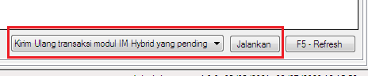
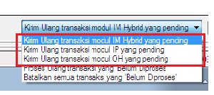
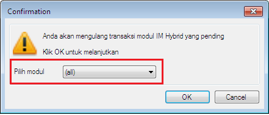

Memilih Modul Kirim Ulang
Pernah mengalami transaksi pending banyak, capek kirim ulang satu persatu?... dan hanya ingin mengirim ulang transaksi pending di modul berlabel nama supplier tertentu?... bukan semua modul supplier?... Di versi 4.0.0, Anda dapat mengirim ulang semua transaksi pending dengan memilih modul berlabel nama supplier tertentu yang akan dikirim ulang transaksi pendingnya, tidak semua modul supplier.
Fitur ini berada di menu Transaksi -> Transaksi -> panel kanan bawah:

Modul yang mendukung pengiriman ulang masal ini adalah modul IM Hybrid, IP dan OtomaX HTH. Untuk menggunakannya:- Pastikan ada transaksi yang pending di modul tersebut diatas.
-
Pilih transaksi yang pending di modul mana yang hendak dikirim ulang, dan kemudian klik tombol Jalankan.

-
Di sesi ini fitur dimaksud akan muncul:

Disini Anda dapat memilih modul berlabel nama supplier yang ingin dikirim ulang transaksi pendingnya. Setelah memilih nama modul supplier, klik tombol OK untuk mengirim ulang semua transaksi pending, atau klik Cancel untuk membatalkan kirim ulang. - Selesai
Jika mempunyai pertanyaan terkait fitur ini silahkan kirimkan ke alamat email support@otomax-software.com.